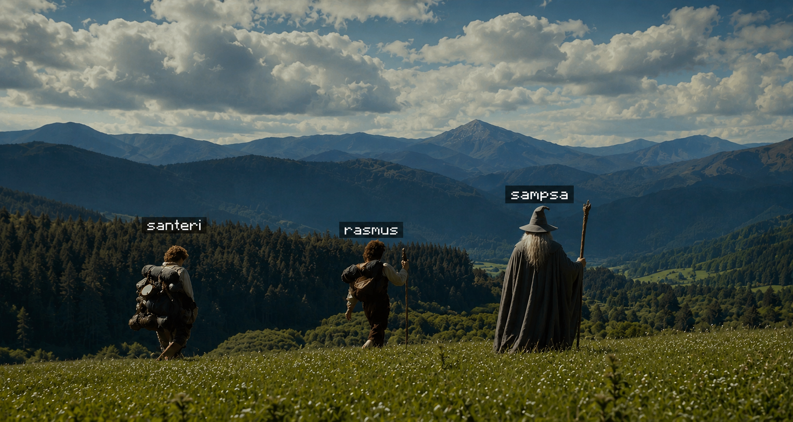
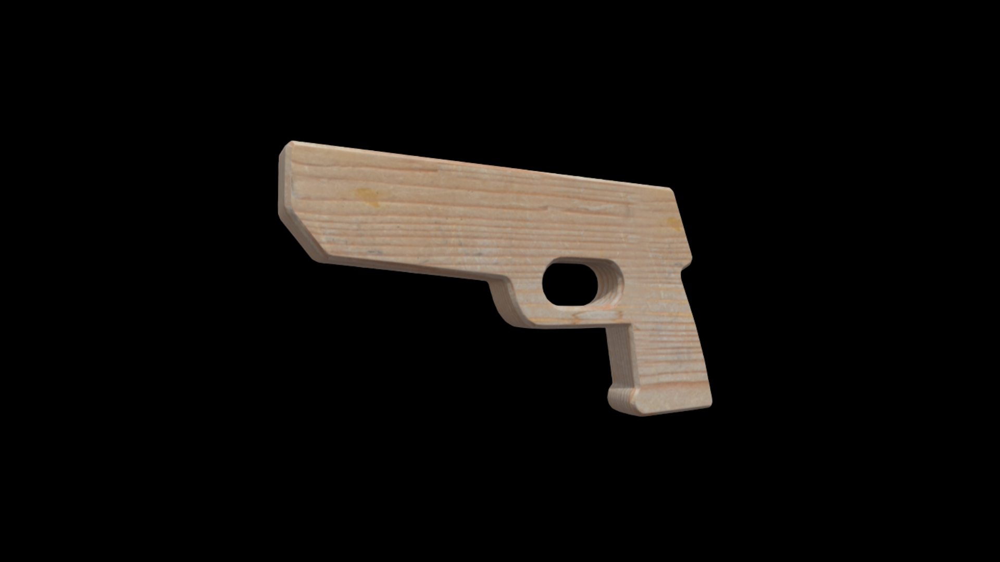
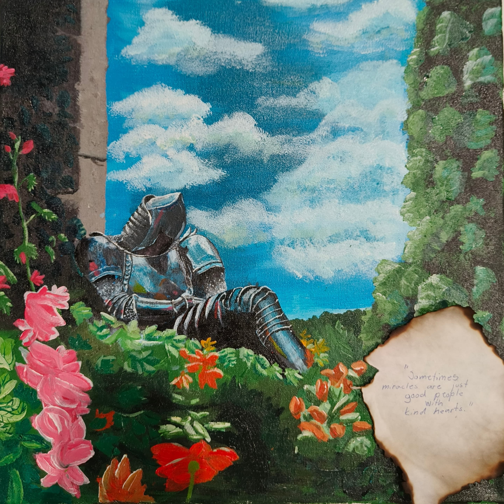

Currently on a quest to help the ones that are not alright, including myself
www.backto101.com/why
things I´ve brought to
so far
wooden gun collection

unlocked at level 4
paintings

documentaries
The Extra Mile - 100km
Ultramarathon documentary
Ultramarathon documentary
unlocked at level 2